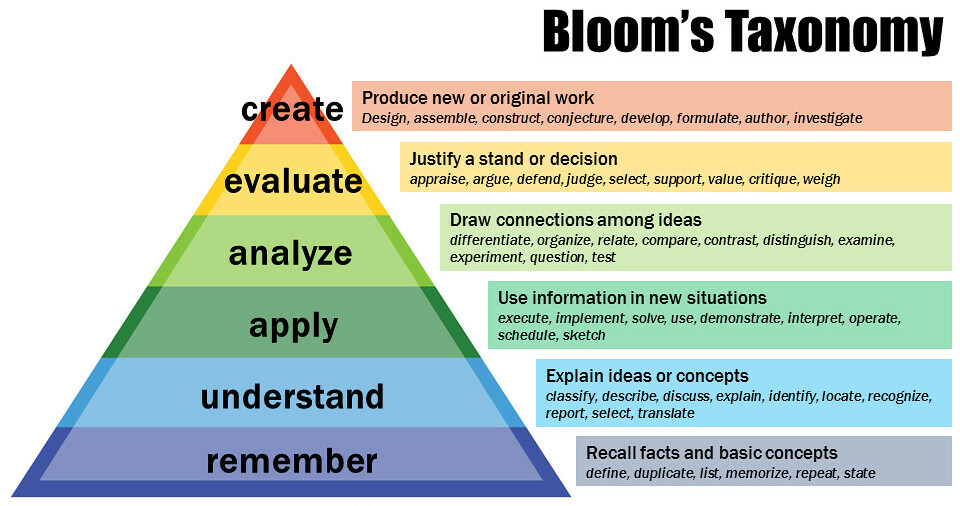

Vor einigen Wochen bin ich über ein wundervolles Youtube Video gestolpert, dass mich über Blooms Taxonomie des Lernens informiert hat. Bloom stellt darin eine faszinierende Methode vor, mit der man sich Wissen über ein Thema schnell und effektiv aneignen kann.
Das hat mich ein bisschen umgehauen, da ich in alle den Jahren in denen ich gelernt habe noch nie davon gehört hatte. Endlich ein brauchbares Modell, wieso manche meiner Lerngewohnheiten gut oder eben schlecht funktionieren.
In kurz, Blooms Taxonomie ist ein Modell aus den 60' er Jahren, in dem er postuliert das es sechs Ebenen des Lernens gibt. Diese werden gerne als Pyramide visualisiert, was ich ungünstig finde → dazu gleich mehr.
Die Pyramide fängt ganz unten (1) mit dem Auswendiglernen an. Dann lernt man (2) wie man Gelerntes erklärt. Dann (3) wendet man es direkt an. Dann lernt man (4) es mit anderem Wissen zu vergleichen. Dann es (5) gegen andere Ansätze zu priorisieren. An der Spitze der Pyramide (6) gewinnt man aus der Erfahrung aus der Anwendung, gewappnet mit den Analysen und Vergleichen, neue Erkenntnisse und Dokumentieren diese (zum Beispiel als Blog-Post).
Wenn man das sieht, erscheint es logisch, dass man diese Stufen brav der Reihe nach von unten nach oben durchläuft.
Und das ist der Clou - das ist genau falsch.
Stattdessen ist es viel schlauer, sofort mit dem Analysieren und Evaluieren anzufangen (Level 4 und 5).
Ja, das ist Anstrengender, aber man kriegt damit die ersten drei Ebenen geschenkt, denn es passiert automatisch wenn man sich selbst mit den Fragen der Ebene 4 und 5 herausfordert.
Dazu kann mann jetzt auch noch Vergleichen wie sich das neue Wissen in das bereits gelernte einordnet, und Begründen, in welchem Kontext welcher der Ansätze die man kennt besser funktionieren.
Also: Versucht es mal! Nächstes mal gehe ich noch mal tiefer darauf ein was die einzelnen Ebenen ausmacht und danach, wie man KI dafür verwenden kann sich selbst beim lernen sofort auf Ebene vier und fünf zu katapultieren!